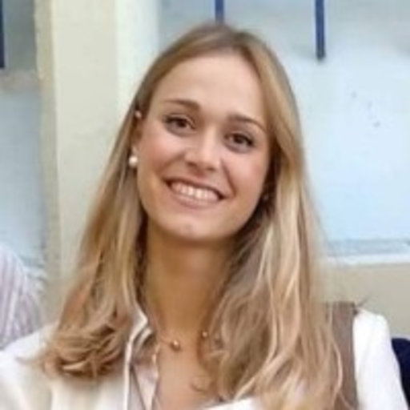

Programme
Research of Women in Our Department: Keynote and Panel
17:00-19:00 GMT on Tuesday, March 8th, 2022
To celebrate the achievements of women* in our department, we are hosting a keynote talk from our Professor Maria Petrou PhD Scholarship winner for 2021 and a series of brief presentations from students in our department, followed by an interactive panel session.
This will be in hybrid format - EEE 611 and a link will be sent to those who register below.
Women in STEM: Roundtable Discussion
11:00-13:00 GMT on Wednesday, March 9th, 2022
To facilitate a conversation on the topic of Women in STEM, the IEEE Student Branch is hosting a roundtable discussion with audience participation.
This will be in hybrid format - TBD (booking not confirmed) and a link will be sent to those who register below.
Register for both events here!
Event 1
Research of Women in Our Department: Keynote and Panel
17:00-19:00 on March 8th, 2022
Professor Maria Petrou PhD Scholarship
The Professor Maria Petrou PhD Scholarship has been established to help recruit, retain and advance the careers of all women, including cis and trans women in engineering. It provides funds for undertaking PhD studies in the Department of Electrical and Electronic Engineering at Imperial College London.
For the first event, the keynote presentation is given by the receipient of this scholarship:

Asimina Mertzani
Scholarship Winner for 2021
Asimina graduated from the National Technical University of Athens with top marks in 2019. She has gone on to her Masters in Applied Machine Learning at Imperial College London to work on "Distribution of Knowledge and Divergence of Expertise in Social Networks". She now continues this research under the supervision of Professor Jeremy Pitt.
Panel for Research of Women in Our Department
The first event focuses on recognising achievements of women in our department and those that support them.
Each panelist will first present their own technical work, the work of another woman in the department, and/or their personal stories. This is followed by a live Q&A from the host and audience. Here are our panelists in alphabetical order.
Dafni Antotsiou
Ph.D. Student in Intelligent Systems and Networks within EEE
After working in R&D in industry, Dafni joined our department to study machine learning and computer vision. Her main research topic is imitation learning in human-centric environments that involve object manipulation. During her time at Imperial, she has also taught STEM students and given a talk to secondary school students about a career in engineering. These experiences highlighted some of the difficulties students, and particularly women, face when pursuing a career in engineering.
Al-Amin Bashir Bugaje
Ph.D. Student in Control and Power group within EEE
As head representative for Ph.D. students in EEE, Al-Amin is an ally to women and minority groups seeking equality. In this panel, he hopes to present a united front with his fellow female panelists and demonstrate how others like him are postively impacted by the presence of women in our department.
Christy Chan
Undergraduate Student in EIE
Christy is an undergraduate student studying EIE. She is developing a novel personalized skincare product recommendation algorithm as part of her final year project. She founded the undergraduate chapter of Women and Non Binary individuals in Computing, aiming to promote equality and equity across all aspects of diversity. She has represented Great Britain in target rifle shooting and powerlifting, winning sportsperson of the year 2020-21.

Priya Chhaya
Undergraduate Student in EEE
Priya Chhaya is a final year undergraduate studying EEE. During her time as EESoc President in 2021, she led several discussions surrounding Equality and diversity within the EEE department, a cause that she is passionate about. She has a particular interest in the intersection between biomedical and electronic engineering.
Dr. Kristel Fobelets
Reader in Microelectronics and was until recently the Director of Undergraduate Studies in EEE
Dr. Fobelets led the curriculum review in the Department and was the chair of the Faculty's e-Learning Implementation Group. She is a member of the College's Senate. She is currently on sabbatical to dedicate time on research. Her vision in research is to support wearable technology within a zero pollution economy. In her research, she investigates the use of non-scarce and non-poisonous materials for sensors, energy generators and storage devices. Her main focus is on Si- and carbon-based nanomaterials that are suitable candidates for this technology. Her goal is to develop non-hazardous, recyclable and flexible devices that can ultimately be used to create responsibly sourced wearable technology.
Kate Highnam (Host)
Ph.D. Student in Intelligent Systems and Networks within EEE
Kate is a Ph.D. Student under the joint supervision of Professor Nicholas R. Jennings CB, FREng, and Dr. Sergio Maffeis. Her professional experience in machine learning and cyber security motivates her current research into domain adaptation in intrusion detection with real world applications. She is also an Enrichment student with The Alan Turing Institute in London.
Event 2
Women in STEM: Roundtable Discussion
11:00-13:00 on March 9th, 2022
Women in STEM: Roundtable Discussion
The aim of the second event is to facilitate a conversation on the current role and future perspectives for Women in STEM. We hope to achieve that via a roundtable discussion with four guest speakers from diverse fields and unique professional experiences. The panel will last up to 90 minutes and will be followed by a cocktail reception and a chance to interact with the speakers.
We invite you to participate in this event, share your personal experiences and thoughts on the topic, and join in the discussion with our four panellists:

Dr. Jelena Ponocko
Lecturer in Distance Learning at the University of Manchester
Lecturer in the Department of Electrical and Electronic Engineering at The University of Manchester, UK. Her research focuses on demand-side flexibility and demand-side management in distribution and transmission networks. Jelena has been an active IEEE PES member since 2015. She is the IEEE PES Women in Power representative for Region 8 (Europe, Middle East and Africa) and has recently received the IEEE PES Outstanding Chapter Volunteer Award by the IEEE PES UK and Ireland Chapter.

Dr. Yaprak Eminaga
Field Application Engineer at Intel Corporation
Field Application Engineer at Intel, who specializes in Field Programmable Gate Array (FPGA) processors, digital signal processing, algorithm development and implementation in various market segments including but not limited to healthcare and life sciences, video and broadcast, and finance. She holds a PhD degree from University of Westminster (2014-2018) with a thesis concentrated on the design and implementation of biomedical signal processors, an MSc in Biomedical Engineering from Imperial College London (2011-2012) and a BEng in Electronics Engineering from University of Westminster (2008-2011).
Alicia Blatiak
Ph.D. Candidate in EEE
Final year PhD researcher at Imperial College London, working on the value of Electric Vehicles with Vehicle-to-Grid technology. She's also CEO of a start-up, Intelliflex, which makes software for predicting Electric Vehicle driving patterns. As an ex-Physics Teacher, she's passionate about promoting STEM education for female students.
Dr. Aizaan Anwar
Ph.D. Student in Intelligent Systems and Networks within EEE
UKRI AI4Health PhD Candidate in Artificial Intelligence (AI) and Machine Learning, working on using AI to diagnose disease progression in brain tumours from speech data collected from a mobile app developed by The Brain Tumour Charity. She's a Malaysian-born, British-trained physician with previous experience in neurology, medical education, epidemiology, and public health. In September 2021, she was selected as a Data Science for All/ Women (DS4A) Fellow.
*On this day, we choose to celebrate the achievements of all who identify as a woman and non-binary.
Organisers
The IEEE Student Branch
@ Imperial College London
EEE Postgraduate Students
Electrical & Electronic Engineering
@ Imperial College London
The Ph.D. Representatives for EEE
Electrical & Electronic Engineering
@ Imperial College London